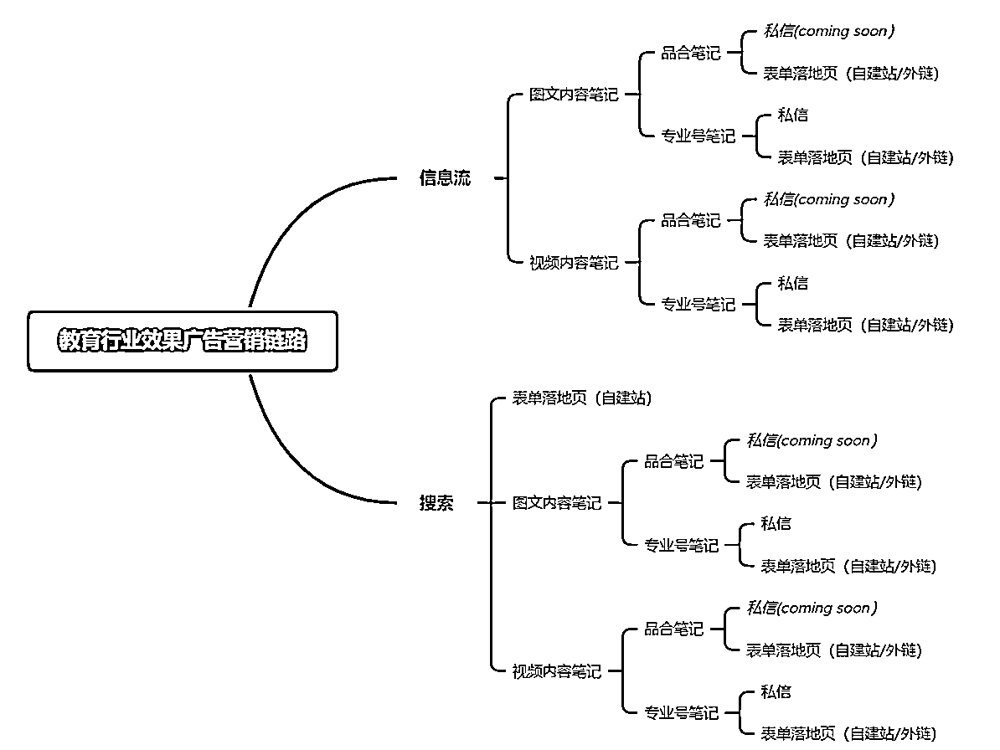
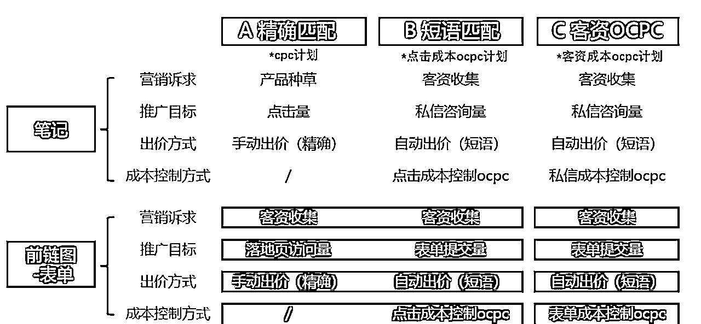
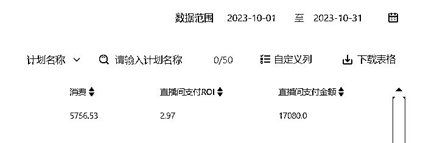

来源：https://f35cb2sn99.feishu.cn/docx/TBEpdgJUMoFDxnxxg5McGyO2nxg
哈喽，大家好，我是sy，深耕小红书投放，目前累计已服务上千家甲方，累计消耗超过千万
就展示两个单户的充值情况吧，消费估计也过亿了
矩阵也给大家看看，行业矩阵
哈喽，大家好，我是sy，深耕小红书投放，目前累计已服务上千家甲方，累计消耗超过千万
就展示两个单户的充值情况吧，消费估计也过亿了
矩阵也给大家看看，行业矩阵
。
之前发布的小红书投放教程感谢大家支持，也收到了大家蛮多的反馈，这次我针对单行业给大家聊聊关于我对小红书聚光教育行业的玩法是怎样的，期间进行了多次优化策略，也希望小红书玩家一起交流。
先po部分成绩，教育行业各个细分赛道均有一些成果。
新玩法跑表单--职业培训赛道⬇️单粉控在160左右，roi可跑到4左右
兴趣培训赛道⬇️单户半个月引流8000人，矩阵号总和半月引流2万人+
论文润色赛道⬇️
兴趣培训赛道⬇️

我们可以看到教育行业营销全流程为：拓客→沟通转化→售卖→履约→复购
拓客：表单链路：小红书表单h5或自由外链
直购链路：笔记+链接（外链,商品，私信）
私信链路：笔记+私信
种草链路：笔记（推荐码，公众号和小程序）
沟通转化：表单链路：电销/加微/入群/试听
直购链路：加微/入群/试听
私信链路：客服/加微/入群/试听
种草链路：外溢/推荐码/试听
售卖：线上正价课程，线下体验面销，线下正价课付费（跟公司规划走）
履约：线上直播课，线上录播课，线上实操课，线下实体课
复购：跨科复购，同科续购，转介激励，回访运营
1.2.1 媒体前端优化：
精准优化：
搜索：CPC (精确匹配)手动出价/自动出价
信息流：CPC手动出价/自动出价
规模化精准获客：
搜索：①CPC (短语匹配)手动出价/自动出价
②OCPC系统调控
③全站智投
信息流： ①CPC手动出价/自动出价
②OCPC系统调控
③Nobid智能托管
④全站智投
*OCPC: 转化出价+指定/不限预算; Noid; 系统自动出价+指定预算
1.2.2 运营后端优化：
①笔记内容（标题用资料或者噱头做钩子，或者笔记最后结束语用钩子引导）
②笔记使用聚光创意端口去实现引导客户
③客服有效干预：目前小红书有私信通+私信服务组件，配合人工客服引导话术
优化要素：优化要素，账户结构，选词素材/笔记， 出价模式
↓ ↓ ↓ ↓
优化目的：优化要素：清晰的账户结构有利于精细化运营，分词性阶梯出价，各个投放计划之间起到1+1>2的功效
账户结构：拓词完整，精准覆盖潜在人群，意向人群，精准人群，实现流量最大化
选词素材/笔记：笔记，素材聚焦品牌，内容优质，有效降低前端成本，并提升自身品牌力
出价模式：合理运用不同的出价模式，帮助更高效的控本放量
覆盖不同类型关键词，覆盖不同阶段用户
搜索策略：
攻:种草教育
①大流量核心词:抢占行业流量入口，高成本抢占高位
②高价值卡位词:竞争平缓，业务高相关高转化词保证首位SOV=70%
③小流量长尾词:低成本引流，低竞争环境，多角度沟通
守:防守拦截
①7*24H首位防守，
②拦截友商，最大化转化核心用户
搜索行为（使用不同的词目的就是全面覆盖不同类型消费者）： 通用大词（潜在消费者会搜索这一类）
英语培训，早教
竞品词 （对比型消费者会搜索这一类）
XX.XX..
行业通用词（查询型消费者会搜索这一类）
大流量核心词:
英语培训机构、早教机构...
小流量长尾词:
考研英语要报班么，早教几岁开始
品牌词 （ 核心消费会搜索这一类）
XX,XX.....
品牌词 通用词 人群词 如何利用聚光不同模式去搭建搜索计划
CPC精确匹配:按系统建议出价设置初始值;根据竞争情况、期望排名、期望成本调整价格
CPC短语匹配：按照CPC精确匹配出价的50%设置出价
OCPC：按照CPA历史表现设置OCPC目标成本
*通用词需按照不同特征细分计划投放
*计划命名:需展示该计划的词性及出价方式，便于监控和优化，如“搜索-通用词-早教-CPC精确
*同账号不同创意单元之间不会百相抢量，但是相同设置的单元之间会出现抢量问题
聚光平台计划搭建方式参考

按照词性来搭建账户，保证不同关键词匹配的出价和素材是有竞争力的
切忌不同词性关键词杂糅在一个计划中，造成贪吃无效的高消费，笔记和搜索词不匹配
2.4 如何购买关键词:
小红书每个月都有月报，参考月报的搜索量，包括后台关键词规划工具
教育行业选词影响效果的三大雷区：
①词量不足行业中跑量较好的计划，每个单元的词量约在100-200个，而转化不佳的单元词量约在50个及以下。
②词的关联度不高投单一项目，高价买其他项目的精准词，造成关键词质量分较低，整体成本上涨
③只买友商不买自己出高价买友商品牌词但对自身品牌词买词出价低，导致流量受损。
OCPC模式效果优于CPC
OCPC:系统根据实时流量动态出价，帮助广告主在保证 转化成本的情况下，提升 转化量
OCPC拓量规模化精准扩张 也不能说cpc就不值得投放 CPC拿来保底精准调价稳定投放
如果不是特别了解或者说刚刚使用聚光建议直接上智能搭建
[智能搭建]: 根据所选推广业务/推广目的/目标成本/所选笔记，系统自动圈词与自动化投放
降低搜索投放门槛与操作成本，提高搜索广告投放效率
搜索广告优化手段总结：
账户结构：按照词类词性拆分计划单元，而不是按照笔记来拆分计划单元。在不确定哪篇笔记CTR好的情况下，同一个单元内上传多篇笔记，靠系统自动优选胜出，跑出最好的素材
选词：
1.选词逻辑根据品牌/通用/场景等方向去进行拓展
2.选词参考关键词规划工具选择真正有量的关键词，切忌生造词
3.确保关键词质量分在6分以上，关注词与素材的关联度，使用高质量素材
匹配/出价模式:
1.关键词不要只投一种模式，而是要精确匹配+短语匹配+OCPC同时分不同计划投放
2.OCPC不可调整重点消费的创意/关键词，落地页、停开计划、控时段，避免破坏模型
信息流广告其实分两种：
①全站智投
②cpc出价人工
全站智投--我就不过多介绍了小红书系统智能投放
cpc出价人工--尽可能按照一个笔记一个机会（个人习惯）
搭建思路：①按照素材维度来搭建账户，保证一篇笔记在相同定向&相同出价下只有一个计划。②同时上传多篇素材，靠系统赛马选出最佳笔记。
优化思路：计划维度对比不同笔记的数据: ctrcpc、转化、单元维度纵向对比同一笔记在不同定向下的转化情况，测试出合适的定向并加大预算，暂停效果差的单元。
投放目标：
产品种草--搭建建议:
如果同一篇笔记素材，1个点击量目标的计划(增加UV、实现放量，降低点击成本)+1个互动量目标的计划(增加点赞，降低互动成本)
投放目标
客资收集--搭建建议:
1，行业兴趣与关键词兴趣都要投;1个行业定向计划+1个关键词定向计划
2，行业兴趣勾选相关行业标签(母婴、教育、金融、科技数码);关键词兴趣视所推项目而定。
信息流常规定向能力一览:
通投---小红书活跃人群
智能定向---系统自动根据您的行业/产品属性和投放目标，挖掘精准目标人群
行业兴趣---系统根据行业阅读兴趣、行业购买兴趣挖掘目标人群
关键词兴趣---支持定向最近一段时间内(3天)搜索过相关关键词的用户
人群包---支持定向通过DMP平台配置的精准人群包
平台推荐---平台推荐定向分为三大类:高潜词包、特色人群和节促人群
另外，最近
家分享分享，从9月份初接手到现在11月低的数据转变。
七月份
八月份
九月份
十月

十一月份
十一月也是测试出来了一个新的玩法，gmv就拉升起来了。
路径玩法都在打磨，后续应该也会分享出来，感谢大家阅读。